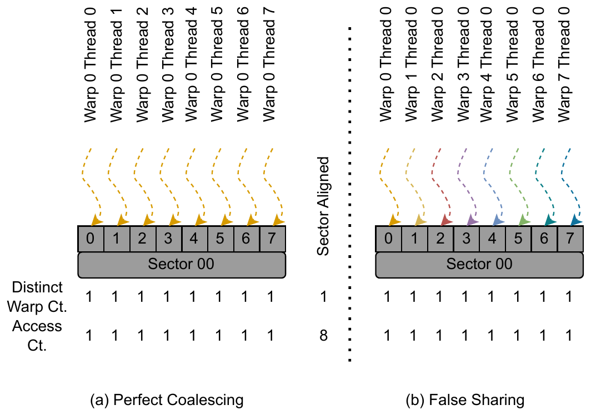
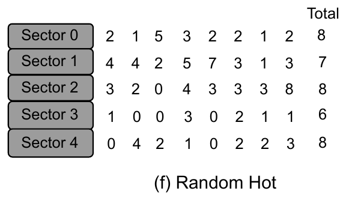
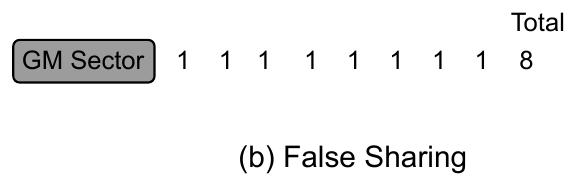
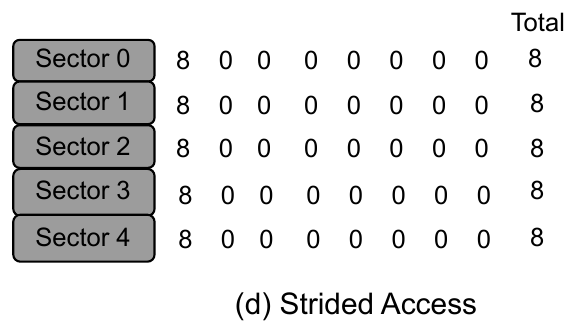

Instructors: Yanbo Zhao, Jiajia Li Fall 2026 10/12/2026
Session Roadmap
The performance-optimization module, centered on memory inefficiencies. Session 3 is an in-class lab.
Part
Topic
Covers
A
Memory Coalescing
How a warp's loads become 32 B sector transactions
B
Seeing Memory Inefficiencies
Counting distinct warps; the patterns at a glance
C
Hot Spots
Hot and random hot sectors
D
False Sharing
Warp-private words in one sector
E
Misalignment
Requests that straddle a sector boundary
F
Strided Access
One useful word per sector
G
Abuse of Shared Memory
Thread-local and warp-local data in shared memory
H
Bank Conflicts
Shared-memory banks and conflict-free strides
I
Occupancy
How registers and shared memory limit resident warps
Part A
Memory Coalescing
Memory Coalescing — Which Access Pattern?
A matrix is stored row-major in global memory. Each thread loops over the matrix. Which pattern does the hardware like?
(a) Each thread walks down a column
In each iteration, adjacent threads read adjacent words of one row.
(b) Each thread walks along a row
In each iteration, adjacent threads read words a full row apart.
Answer: (a) is coalesced ✓
We want the threads active in one load iteration to touch contiguous memory. The hardware then fuses the warp's reads into the fewest 32-byte sectors (CC ≥ 6.0).
CUDA C++ Best Practices Guide.
Why Coalescing — DRAM Bandwidth
The GPU fuses a warp's consecutive reads into the fewest 32 B sectors: 32 floats fill 4 sectors. Peak bandwidth needs large consecutive requests.
GPU (memory)
Peak DRAM bandwidth
V100 (HBM2)
0.9 TB/s
A100 40 GB (HBM2)
1.55 TB/s
H100 SXM5 (HBM3)
3 TB/s
Random access
Scattered or random reads cannot be fused, so effective bandwidth drops far below peak.
NVIDIA V100, A100 & H100 whitepapers; CUDA C++ Best Practices Guide.
Coalescing Strategy
Pattern
Read global memory coalesced into shared memory (whole warp, contiguous)
Then access shared memory randomly at full on-chip bandwidth
(ignoring bank conflicts — Part H)
Modern note
Less critical on GPUs with large on-chip caches, but the coalesced global → staged shared pattern is still the workhorse for tiled kernels.
CUDA C++ Best Practices Guide.
Part B
Seeing Memory Inefficiencies
Count Distinct Warps, Not Accesses
sector — 32 B, the transaction unit (8 words)word — 4 Btemperature — distinct warps touching a word or a sector
The coalescing ruleA memory instruction issues per warp. One warp's accesses to different words of a sector coalesce into one 32 B transaction. Accesses to that sector from different warps cannot coalesce; each costs its own transaction.
So count distinct warpsIn (a) and (b) every word is accessed once, so the access counts are identical. Only the distinct-warp count separates them: 1 transaction vs. 8. A sector's distinct-warp count ≈ the number of sector transactions it costs.

Figure: cuThermo (Zhao et al., arXiv:2507.18729).
Inefficient Access Patterns at a Glance
Pattern
Heat-map signature
Why it's slow
Fix
Hot spot
every word hot (e.g. 32 warps); sector ≈ its hottest word
many warps re-read the same sectors
stage in shared memory or registers
Random hot
words shared by a random number of warps
input-dependent contention
stage in shared memory; reorder the input
False sharing
each word 1 warp; sector 8 warps
8 sector transactions instead of 1
swap the thread-to-index mapping so threadIdx.x runs along the contiguous dimension
Misalignment
boundary sectors touched by 2 warps
one extra sector per warp (5 vs. 4)
align to 32 B; pad the row pitch
Strided
1 word of 8 used; that word and the sector 8 warps
Every word of every sector is touched by all 32 warps. The sector total (32) equals its hottest word.

Words are shared by a random number of warps (0–8). Which words are hot depends on the input.
Why it costs, and the fixEach warp that reads a hot sector issues its own transaction. Data that many warps share belongs on-chip: stage it in shared memory once per block.
Every warp in a block re-reads the same sectors of B from global memory. On the heat map, every word of those sectors is touched by all the warps.
FixStage tiles in shared memory, exactly the tiled kernel from Session 1. Each tile of B is read from global memory once per block, then reused on-chip by every warp.
int j = blockIdx.x * BLK + threadIdx.x;
if (j < nnz)
atomicAdd(&y[rowidx[j]],
val[j] * x[colidx[j]]); // random gather on x
Which entries of x are hot depends on the input, so hot words are shared by a random number of warps. There is no regular structure to tile.
Size mattersThe gap appears only once x (16.8 MB) outgrows the L2 cache. At n = 220 the same change gives just 1.6×.
Fix the data, not the kernelReorder the matrix so nonzero columns sit in a band near the diagonal. A bandwidth-reducing permutation (e.g. reverse Cuthill–McKee) does this. The kernel is unchanged.
Demorandom_hot/spmv_naive.cu → spmv_opt.cu, 4.19 M × 4.19 M with 33.5 M nonzeros: 4.167 → 0.887 ms (4.70×).
The trapA warp's accesses to different words of one sector coalesce into one 32 B transaction. The same sector accessed by different warps cannot be coalesced. A sector whose 8 words are each warp-private costs 8 sector transactions instead of 1.
Heat-map tellThe whole sector's temperature (8) is far higher than any single word's (1). In a hot spot, the sector ≈ its hottest word.

Figures: cuThermo (Zhao et al., arXiv:2507.18729).
Consecutive threads access words spaced a fixed stride apart instead of contiguous words.
Only word 0 of each sector is used; 7 of 8 words are never touched
7/8 of every sector transaction is wasted
That word is touched by 8 distinct warps, so coalescing does not apply
The unused words also fill L1, crowding out other data
Real case: Gram-SchmidtGRAMSCHM kernel3 reads q[i*NJ+k], so successive accesses are a full row apart. Transposing the indices of q lets a warp read adjacent words.

Figure: cuThermo (Zhao et al., arXiv:2507.18729).
Strided Access — Vector Add
Naive — a scattered (but complete) index mapping
int t = blockIdx.x * blockDim.x + threadIdx.x;
int chunk = n / STRIDE; // STRIDE = 32
int i = (t % chunk) * STRIDE + (t / chunk);
if (i < n) c[i] = a[i] + b[i];
Fixed — identity mapping
int i = blockIdx.x * blockDim.x + threadIdx.x;
if (i < n) c[i] = a[i] + b[i];
In the naive kernel adjacent lanes land 128 bytes apart: one useful word per 32 B sector, so 7/8 of every transaction is wasted. Both versions compute the same result.
FixMap adjacent threads to adjacent words, by changing the index or the data layout.
Demostrided/vadd_naive.cu → vadd_opt.cu: one line changed. 3.721 → 0.353 ms (10.5×).
Each word of this shared-memory sector is touched by exactly one warp. The whole sector is touched by one warp or a few, depending on the application.
Why it hurtsShared memory is carved out of the same on-chip storage as L1. Space spent on data no other warp reads shrinks L1 for everything else. It also adds extra load, store, and synchronization instructions.
The purpose of shared memoryShorten the latency of data that is reused, by several threads or warps of the block. Words with temperature 1 defeat that purpose.
Figure: cuThermo (Zhao et al., arXiv:2507.18729).
Abuse of Shared Memory — Three Cases
Case 1: Thread-localA word touched by only one thread: thread-private scratch, no sharing at all. Fix: keep it in registers, which also frees L1.
Case 2: Warp-localWords each touched by only one warp: no cross-warp reuse. Fix: exchange inside the warp with __shfl_sync instead.
Case 3: Over-allocationShared memory that nobody reuses shrinks the L1 cache and can lower occupancy. Fix: allocate only what earns cross-warp reuse.
Rule of thumbUse shared memory only when multiple warps reuse the data. Otherwise registers or __shfl_sync are cheaper and leave L1 intact.
Demosmem_abuse/ttm_naive.cu → ttm_opt.cu: a per-thread accumulator moved from __shared__ to registers, returning 16 KB/block to L1. 0.0745 → 0.0662 ms (1.13×).
Shared memory is divided into 32 equally-sized banks (Bank 0 … 31). Each bank delivers 32 bits per clock; successive 32-bit words map to successive banks. The warp is 32 threads and the number of banks is also 32, so a warp can read 32 distinct banks in one transaction. (historical: G80/GT200 had only 16 banks.)
Bank conflict
Two threads access the same bank but different addresses → accesses are serialized.
CUDA C++ Best Practices Guide.
Bank Access Patterns
Bank of address = word_index % 32. For bank = thread*stride % 32:
Stride 1thread i → bank i No conflict
Random 1:1 permutationeach thread a distinct bank No conflict
Stride 2banks 0,2,4,… reused 2-way conflict
Stride 8
Many threads collapse onto few banks → heavy conflict (8-way), accesses fully serialized.
CUDA C++ Best Practices Guide.
Fast & Slow Paths
Fast Path 1
All threads access different banks → one cycle, full throughput.
Fast Path 2
All threads access the same address → hardware broadcast, no conflict.
Slow Path
Multiple threads → same bank, different addresses → accesses serialized.
CostAn N-way conflict takes N times as long as a conflict-free access.
CUDA C++ Best Practices Guide.
In-Class: Conflict-Free for Which s?
shared-memory access
float f = shared[index + s * threadIdx.x];
s
Conflict-free?
1
Yes ✓
3
Yes ✓ (odd, coprime w/ 32 → permutation)
2
No ✗ (2-way)
4
No ✗ (worse — 4-way)
RuleOdd stride s (coprime with 32) → maps the 32 threads onto a permutation of the 32 banks → conflict-free. Evens shares factors with 32 → conflicts.
CUDA C++ Best Practices Guide.
Part I
SM Resource Partitioning (Occupancy)
SM Dynamically Partitions Its Resources
SM streaming multiprocessorTLP thread-level parallelism
Each SM splits four resources across resident blocks: block slots, thread slots, registers, and shared memory.
Resource (per SM)
V100 (7.0)
A100 (8.0)
H100 (9.0)
Resident block slots
32
32
32
Thread slots
2048
2048
2048
32-bit registers
64K
64K
64K
Shared memory
96 KB
164 KB
228 KB
CUDA C++ Programming Guide; NVIDIA A100 & H100 whitepapers.
The binding limit is whichever resource runs out first; here, thread slots. The method is unchanged today; only the numbers grow (2048 thread slots and 32 resident blocks/SM on V100–H100).
CUDA C++ Programming Guide.
Occupancy — Registers & the Cliff (historical example, G80)
G80 has 8192 registers/SM. Blocks of 256 threads. A modern SM has 64K registers, but the same cliff appears at its own thresholds.
Performance cliff
One extra register/thread drops occupancy 768 → 512. More registers → less TLP. A small increase in resource use can sharply cut parallelism, unless the extra resources hide global-memory latency.
CUDA C++ Programming Guide.
Know What Bounds Your Kernel Before Fixing a Pattern
In each demo below the pattern is real and the metric moves as predicted, but the clock does not.
Demo
What the metric shows
Time
Why
misalignment/
−24.6% sector transactions
unchanged
DRAM-bound; misalignment adds only L1↔L2 traffic
false_sharing/warpsum_*
8× fewer store sectors
6% slower
stores are ~3% of traffic; the added __syncthreads() costs more
random_hot/ SMEM staging
results match, no speedup
0.88×
after reordering, L1 already serves the working set
bank_conflict/ (Part H)
4.06 M → 0 conflicts
1.87× at 512², 1.07× at 2048²
the conflicts matter only while they're on the critical path
The lessonA profiler finds the pattern; the roofline (Topic 2) tells you whether fixing it can pay. Fix the patterns on your kernel's critical path.
parallel-demos, RTX A4500.
Wrap-Up — The Optimization Toolkit
Global memory
Coalesce global loads (fewest 32 B sectors per warp)
Count distinct warps per word and per sector
Hot spots → stage in shared memory
False sharing, strided → adjacent threads on adjacent words
Misalignment → align or pad to 32 B
Shared memory & resources
Thread- or warp-local data → registers or __shfl_sync
Avoid bank conflicts (odd strides)
Watch the occupancy cliff
Fix only what is on the critical path
References
Y. Zhao, J. Cui, Z. Li, S. Jiao, X. Liu, J. Li, "cuThermo: Exposing GPU Memory Inefficiencies with Heat Map Profiling," arXiv:2507.18729. Heat-map figures are reproduced from this paper.